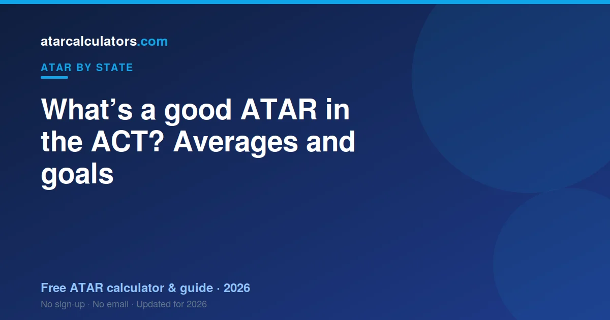

A ‘good’ ATAR in the ACT depends on your course goal. Nationally, the median ATAR sits around 70. An ATAR of 80 is comfortably above the middle. An ATAR of 90 is roughly the top 10%, and 99 is about the top 1%. For most courses at ANU and the University of Canberra, aiming above your course’s cutoff matters more than any single ‘good’ number.
Key takeaways
- There is no universal good ATAR. It depends on your course goal.
- The national median ATAR sits around 70.
- 80 is comfortably above the middle. 90 is roughly the top 10%.
- 99 is about the top 1% of the age group.
- For entry, your course cutoff matters more than a round number.

A good ATAR depends on your goal
Whether an ATAR is good depends on your course. The ACT calculates differently from everywhere else: your best three majors plus 0.6 of your next course, scaled by the AST.
What the ATAR numbers actually mean
ACT-specific average ATARs are not published as clean official numbers, so be cautious about any exact ACT figure. The ATAR is a percentile against national reference points.
Is an ATAR of 80 good in the ACT?
An ATAR of 80 in the ACT means you outrank roughly four in five of your cohort. It is built from 3.6 courses — the smallest count in the country.
Is an ATAR of 90 good in the ACT?
An ATAR of 90 in the ACT is the top tenth. With only 3.6 courses in the calculation, each one carries unusual weight.
Is an ATAR of 70 good in the ACT?
An ATAR of 70 is around the national middle, so it is a solid, useful result. It is not the top, and that is fine.
With 70, you can reach a good range of courses, especially at the University of Canberra and interstate. Bonus points and pathways can widen your options further.
If your target course needs more than 70, you have clear levers to pull. Our improvement guide shows where to focus.
What about the ACT average?
The middle of the ACT range is the middle by construction, because the ATAR is a rank against your age cohort.
A good ATAR for your course
The most useful way to judge ‘good’ is against your target course. A good ATAR for nursing is different from a good ATAR for engineering.
So look up the cutoff for the course you want. Our ACT cutoffs guide gives realistic ranges for popular courses, so you can set a target that fits your goal.
Why the ACT median sits where it does
The ACT median sits where it does because a rank has a middle by definition. What is genuinely distinctive here is the AST: the ACT is the only jurisdiction that uses a scaling test to compare colleges, rather than scaling on cohort performance across subjects alone.
Is an ATAR of 95 good in the ACT?
An ATAR of 95 in the ACT is the top 5%. Your college course scores get there via the AST, which is what makes ACT scaling unlike any other state’s.
What ATAR is in the top 20%?
The top 20% of the ACT cohort sits at an ATAR of about 80. That is percentile arithmetic and holds nationally.
Setting your own target
Set your ACT target from your course, then work back through your best 3.6. Your college scores are scaled by the AST, and UAC works out the ATAR while the BSSS runs your certificate.
Comparing your ATAR fairly
Comparing your ATAR to an interstate friend’s is fair — it is a national rank. Comparing your college course scores to their subject marks is not, because the AST sits between yours and the rank.
Common questions
What is the average ATAR in the ACT?
There is no clean official 'average ATAR' published per state. Nationally, the median ATAR sits around 70. Be cautious about any exact ACT average you see quoted, because it is not an officially published figure.
Is an ATAR of 80 good in the ACT?
Yes. An ATAR of 80 is comfortably above the middle and opens most courses at ACT universities, though not the most competitive ones like medicine or some ANU degrees.
Is an ATAR of 90 good in the ACT?
Yes, very. An ATAR of 90 puts you in roughly the top 10% of your age group. It reaches competitive courses at ANU, and gives a solid base for medicine.
Is an ATAR of 70 good in the ACT?
Yes, it is a solid result around the national middle. It opens a good range of courses, especially at the University of Canberra and interstate, and bonus points or pathways can widen your options.
What is a good ATAR for medicine in the ACT?
Medicine usually needs an ATAR of 95 or above, plus a test and interview. So a 'good' ATAR for medicine is one that clears that high bar with room to spare.
Why is the median ATAR around 70?
The ATAR ranks students against their whole age group, including those who do not sit an ATAR pathway. That cohort effect is why the median among ATAR recipients sits around 70 nationally.
Is a good ATAR the same for every course?
No. A good ATAR is one that clears your course's cutoff with a buffer. That number is different for nursing, engineering, law and medicine, so judge it against your goal.